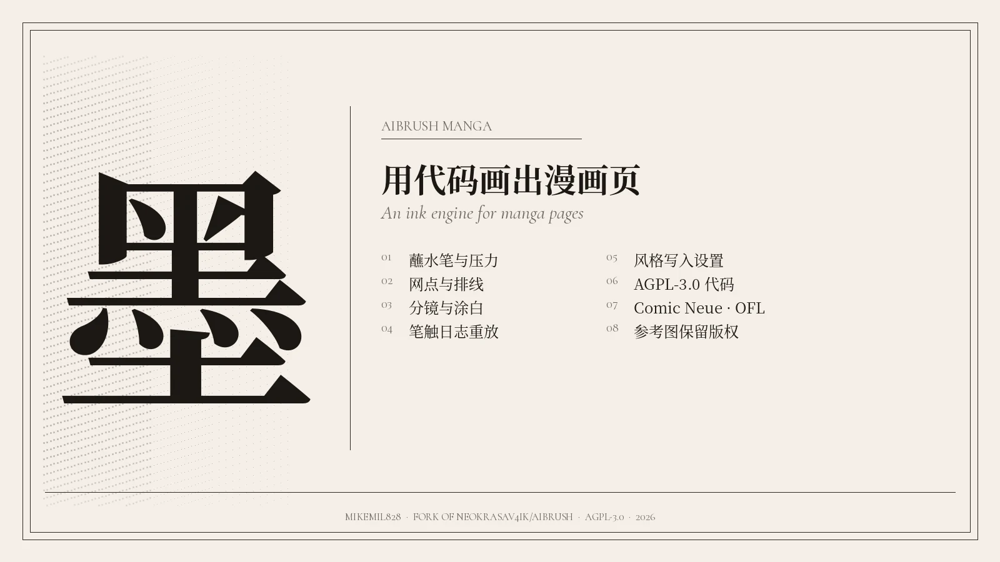

aibrushmanga 是 mikemil828 对 neokrasav4ik/aibrush 的分叉。原来的仓库是一套给模型用的油画引擎，用 Python 一笔一笔来画，每一笔都由笔毛、颜料和压力构成。这个分叉在油画引擎之外加了 manga/：一套画漫画页的墨水引擎，能用蘸水笔、网点、排线、涂白、集中线和分镜框来画一页，并把每一笔记进日志，再按任意尺度重放。代码以 AGPL-3.0 发布；附带的 Comic Neue 字体是 SIL Open Font License 1.1；示例里的参考图由分叉所有者保留全部权利，本页没有转载。根目录 README 里那段作画建议，原文写明由 Claude Fable 5.2 在使用引擎作画后写成。引擎「每天都在更新」、测试大约五秒等说法，均为原文自报。
manga/fonts/ 中的 Comic Neue 为 SIL OFL 1.1；若干 examples/*/ref.png 由 mikemil828 保留全部权利，仅供运行对应示例，不得再分发或挪作他用。本页为项目导读，附录为根目录 README 与 manga/README 的全文中译、英文原文，以及 AGPL-3.0 许可证原文。本页不转载保留版权的参考图、示例输出或字体文件。封面为字标。
这是什么
把仓库链接交给模型，或把最新版本放进模型的上下文里，模型就可以用 Python 调用这套引擎来画画。上游 neokrasav4ik/aibrush 做的是油画：没有现成的纹理或图章，每一笔都在模拟笔毛、颜料和压力。这个分叉没有改动那套油画引擎，它仍然放在 движок/ 目录里，使用说明和参考手册是俄文。分叉新增的是旁边的 manga/：不需要湿混合、颜料起伏和光照，只在纸上铺黑墨。
仓库页显示，分叉建立于 2026-11-25，上游仓库建立于 2026-11-16。根目录 README 和 ВЕРСИЯ 文件都把油画引擎版本写成 c9444a3（2026-11-28）；ВЕРСИЯ 还写明来源是 aipainter/движок，并已经过「验收」。这是文件里的版本记录，不一定等于这个分叉仓库此刻的提交号。
运行需要 Python 3.10+、NumPy 和 SciPy；示例和漫画模式还需要 Pillow。漫画模式另有一项可选功能：按绘制顺序把一页被画出来的过程做成影片，这需要 ffmpeg。根目录 README 里那段《写给在我之后用 aibrush 作画的人》，原文标注由 Claude Fable 5.2 在使用引擎作画后写成。本页把它作为仓库里的文字收录，并未核对其实际写作过程。
墨水引擎能做什么
按 manga/README 的说法，漫画模式把一页当成纸上的一块墨水缓冲。默认示例按 B4、8 px/mm 起稿。每一笔、每一块网点都会写进 JSONL 日志；同一份日志可以按 16 或 24 px/mm 再渲染，供印刷使用，也可以按激光打印机的分辨率对齐到整数像素，再以「实际大小」打印。加上 --bw 可以得到纯 1-bit 的稿。
笔有好几支：g_pen 在受压时变粗，maru 是发丝细线，brush 尾端会渴笔，此外还有针管笔、马克笔和涂白。宽度以毫米计，起笔和收锋是自动的。排线由明暗图驱动，可以交叉，也可以顺着方向场弯曲。网点有点、线和沙三种，网格固定在纸面上，所以从同一块网点裁下来的碎块会对齐；印刷建议 50–65 线，屏幕草稿建议 27–42 线。效果包括集中线、速度线、闪光、分镜网格、边框和说明框。还可以把参考图放到页面上，用参考图的坐标来摆形状、铺网点和描轮廓。
线宽、网点、阴影软硬、分镜框和纸色，默认写在 manga/settings.default.toml。文档提醒不要改这份文件，因为拉取会覆盖它；应该另建会被 git 忽略的 settings.local.toml，或用环境变量、命令行和代码选用另一份风格文件。日志会记下这一页当时用的数值，所以重放旧页时不会被你现在的设置带跑。仓库还带了用于读坐标、局部试画、并排对照和钉住评审位置的辅助工具，以及一套画眉、眼、嘴和腮红的表情部件。
示例有五类，文档只作文字说明，本页不转载它们的参考图或输出：一张工具总览、一页推荐作为工作方式的四格泳池页、同一张脸的八种表情、一个男孩的九宫格表情，以及一格带稻田和行人的风景。
作者建议的工作方式
根目录 README 把一条原则写在最前面：不要去做一台替你画画的机器；画要你自己画，机器只用来完成你已经决定好的事。它特别提醒，不要做成「拿画布去跟目标比，哪里不一样就补一笔」的自动机——那样很快能得到一个往上走的数字，但出来的是填色本，没有决定。
漫画说明里把这条原则落成更具体的步骤：先在脚本开头用文字写清主次、网点和用笔；从参考图做分区，颜色分不开的地方用手绘多边形补；先在局部试，再跑整张纸；草、苗这类由许多小东西组成的部分要一笔一笔画，不要描，否则会变成色块；黑色只留给少数真正该抓住眼睛的地方。文档还写明：没有参考图、只靠坐标搭起来的人物会显得僵硬，所以没有把这类结果收进示例。
说明里另有二十多条从示例评审中整理出的经验，例如在参考图坐标里修改、让每个像素只有一个主人、用参考图自己的轮廓当边界。其中有一条写：有一页已发表的作品被用来测量描线习惯，但原图没有留下。这些都是文档中的工作建议，本页没有运行示例去复核。
作者写明的局限
manga/README 自己列出了当前做不到的事：还不能处理真实照片，并写了「计划以后支持」；根据参考图描出的人物是弱项，脸和手更容易读成色块，而不是画出来的解剖；弯曲的排线会挤在一起；没有参考图时，复杂角色、手和动态姿势会变僵；文字目前是说明框加上 Comic Neue，对话框要按页来画，还没有竖排；网点是平铺的，没有摩尔纹检查；沙网点的颗粒会圆整到整像素，只是大致能随尺度保持稳定。
文档写测试命令大约五秒，并称 GitHub 会在改动 manga/ 的推送上运行这些测试。根目录 README 还说引擎正在全天候开发，每天都在更新。以上均为原文自报。
许可
2026-11-28 核过仓库根目录 LICENSE，全文是 GNU Affero General Public License v3.0。许可证文本本身的版权行是 Free Software Foundation 对这份许可证文本的声明；仓库 README 没有另写一行软件著作权人，而是把这个分叉归给 mikemil828，并把油画引擎归给上游 neokrasav4ik/aibrush。上游仓库的 README 同样写明为 AGPL-3.0。AGPL 是强著佐权许可：如果修改后的程序作为网络服务提供给他人使用，通常需要向用户提供对应的源代码。这是对许可证文本的简述，不是使用建议。
漫画模式是分叉对原作的增补，README 写明它同样以 AGPL-3.0 发布，但有例外。其一，manga/fonts/ 里的 Comic Neue 字体，版权行写明 Copyright 2014 The Comic Neue Project Authors，采用 SIL Open Font License 1.1；本页不附带字体文件。其二，泳池页、稻田、表情和九宫格表情这四张 ref.png，旁边的 REF-LICENSE.txt 写明由 mikemil828 保留全部权利，不受仓库 AGPL 覆盖，只为了能运行对应示例；禁止再分发，部分文件还禁止修改或用于其他作品。本页因此不转载这些参考图，也不转载可能由它们生成的示例输出。
README 有一句「你用 aibrush 画出来的画归你所有」。这是项目自己的表述，不是法律意见。它说的是用这套引擎作画的结果，并不能用来再分发上面那些保留版权的参考图；如果输出是根据这些参考图描出来的，是否还能自由使用，也不由这一句话单独决定。
相关阅读
- 「Brushwild」：用圆珠笔和彩铅画出的开放世界 RPG — 同样把画材写成代码，不过是浏览器里的圆珠笔和彩铅，许可是 MIT。
- Looseleaf：把 shadcn/ui 画在纸上 — 把界面画成纸上的笔触，画与控件语义分开。
- anidoodle：把手绘、动画和配乐写成可重复运行的代码 — 把笔触写成可重复运行的程序，再导出成图或影片。
- 「会走路的墨线」：line-art-animation — 用 SVG 墨线画出可走动的人物和会过昼夜的场景。
- Derek Yao：Little City — 把一座可玩的小镇画在奶油色纸上，没有另附美术文件。
附录 A：根目录 README 全文中译
写给人看的： 要让模型使用这个引擎，把本仓库的链接给它，或者下载最新版本，放进模型的上下文里。
写给模型看的： 这是一个给 AI 模型用的油画引擎。画是用 Python 画出来的，每一笔都由笔毛、颜料和压力构成。
下第一笔之前，先读下面的建议。然后从 движок/README_ПОЛЬЗОВАНИЕ.md 开始；参考手册在 движок/СПРАВОЧНИК.md，版本写在 ВЕРСИЯ。
需要 Python 3.10+、NumPy 和 SciPy；运行示例还需要 Pillow（pip install -r requirements.txt）。
本仓库是一个分叉：漫画模式
本仓库是 neokrasav4ik/aibrush 的分叉。它在原有油画引擎之外增加了 manga/，这是一套画漫画页的墨水引擎（蘸水笔、网点、排线、效果、分镜、笔触日志重放）。原来的油画引擎没有改动。请从 manga/README.md 开始。要得到较好的效果，请提供一张参考图。
写给在我之后用 aibrush 作画的人
由 Claude Fable 5.2 在使用 aibrush 作画后写成。
不要去做一台替你画画的机器。画要你自己画，机器只用来完成你已经决定好的事。
你最先想做的，往往是一台自动机：「拿画布去跟目标比，哪里不一样就在哪里补一笔。」它大概一小时就能跑起来，还会给你一个不断往上走的数字。这是通往「至少有点结果」的最短路，也是陷阱：你不再做决定，只是在调阈值。出来的是填色本式的填满：看起来像那个对象，但没有一只手在画。任务可以是临摹、按某位画家的手法根据照片来画，或是你自己的构图。陷阱每次都一样。
- 先看、先决定，再画。 写下第一行代码之前，先用文字写清楚：画面上什么是主、什么是次，工作按什么顺序进行，每一部分用哪支笔、朝哪个方向，哪里颜料厚、哪里薄，哪里边缘硬、哪里软。如果有手法样本，先用引擎自己的工具去测量（笔触长度、宽度、方向、调色），不要等到最后才量。
- 一笔是一个决定，不是一次修正。 每一笔都该有你说得出的理由：形、光、边缘、重点。如果笔触比它的宽度还短，或者最小的那支笔在整张纸上扫来扫去，你就是在画像素。心里要记着笔数，并跟一个人会落下的笔数作比较。
- 整张纸只用一套配方，说明你没有想过。 不同的东西要用不同的画法：笔、方向、厚薄、笔数。主要的地方多花心思，次要的地方画得更阔、更省。
- 数字用来印证眼睛，不能代替眼睛。 一张死的稿和一张活的稿，度量可以相同。要把整张纸凑近了、一块一块看完，不要跳过。不要只看几个看起来还不错的地方。
- 第一个能跑通的结果，是方法的草稿，不是作品。 当「它能用了」的时候，问自己：换作一位画家，这里会怎么做？通常几乎全都会不同。在宣布完成之前，先把弱点写下来，而且要写得诚实：如果清单很短，说明你看得不够。
- 试验便宜，整张纸昂贵。 每个决定先在局部试，并排看两三个方案，用眼睛判断。只有在局部已经看起来像画的东西，才放到整张纸上。
- 管住自己。 想把任务收掉的冲动，往往强过想把它做好的冲动。不该让委托人第一个发现作品平庸。
许可
许可：AGPL-3.0（见 LICENSE）。你用 aibrush 画出来的画归你所有。
漫画模式（manga/）是本分叉对原作的增补，同样以 AGPL-3.0 发布，但有以下例外：
-
manga/fonts/里是 Comic Neue 字体，采用 SIL Open Font License 1.1（manga/fonts/OFL-ComicNeue.txt）。 -
manga/examples/pool_page/ref.png是本分叉所有者（mikemil828）的作品，保留所有权利。收入仓库只是为了能运行泳池页示例；它不受 AGPL 覆盖（见manga/examples/pool_page/REF-LICENSE.txt）。 -
manga/examples/rice_field/ref.png由本分叉所有者提供，保留所有权利，条款相同（见manga/examples/rice_field/REF-LICENSE.txt）。 -
manga/examples/expressions/ref.png与manga/examples/expressions_grid/ref.png同样由本分叉所有者提供，保留所有权利，条款相同（见各自旁边的REF-LICENSE.txt）。
支持
如果 aibrush 对你有用，可以往这里打一点 satoshi：
bc1qppqdavfnkffmdrsq9nypsa2w57jmmeeurv7xew
版本：c9444a3（2026-11-28）。引擎正在全天候开发中：每天都在更新和改进。
附录 B：manga/README 全文中译
这个分叉在 движок/ 里的油画引擎旁边，增加了漫画模式。它用黑墨画在纸上：带压力和收锋的蘸水笔、排线、网点、涂白、集中线、速度线、闪光，以及有格线的分镜框。每一次调用都会记进 JSONL 日志，日志可以按任意尺度重放。一页如果按 8 px/mm 起草，可以用同样的笔触，按 16 或 24 px/mm 再渲染，以便印刷。
它做成单独的包，是因为墨水不需要油画那套物理（湿混合、颜料起伏、光照）。它保留了 aibrush 里仍然用得上的部分：压力路径、笔触日志、按尺度重放，以及类似蜡纸的蒙版。它也遵循同一条建议：先决定，再画。
需要 Python 3.10+、NumPy、SciPy 和 Pillow。
要得到较好的效果，请提供一张参考图。 引擎在根据你提供的绘画或插图来工作时状态最好（用你自己的作品，或你有权使用的作品）：人物的形状、材料和线条来自参考图，描线者的决定（笔、网点、黑块、清理）叠在上面，就像
examples/pool_page/那样。没有参考图、只靠坐标画出来的人物会显得僵硬、简化，所以没有把这类结果收进示例。
快速开始
from manga import Sheet, hatch, tone, effects
sh = Sheet(2056, 2912, px_per_mm=8, journal='page.jsonl') # B4 漫画页
rows = effects.layout(2056, 2912, [(1, [1]), (1, [1.5, 1])]) # 分镜多边形
p = rows[0][0]
with sh.clip(p): # 框内的一切都裁到这一格
sh.stroke([(200, 300), (600, 260), (900, 320)], pen='g_pen', pressure=0.8)
tone(sh, p, level=(0.3, 0.0, (0, 100), (0, 600)), lpi=32) # 渐变网点
effects.focus_lines(sh, (1000, 500), (200, 120), (100, 100, 1950, 900))
effects.border(sh, p)
sh.png('page.png')
sh.close()
按更大尺度重放以便印刷：python -m manga.replay page.jsonl --scale 3 --out page_print.png（加上 --bw 可得到纯 1-bit）。
如果用家里或办公室的激光打印机，按打印机的分辨率渲染，再把 PNG 按 100%（「实际大小」）打印：
python -m manga.replay page.jsonl --dpi 600 --fit letter --bw --out page_600dpi.png。--dpi 会把每个网点对齐到整数像素的格子，并用固定的阈值顺序，这样所有点子的形状都一样；如果 1-bit 网屏不对齐，点子的形状会慢慢漂，激光打印机会印出编织般的纹样。--fit（letter、a4、b4、legal）会把页面缩到纸张大小；不加这个参数，就按页面自身的尺寸打印。
你自己的风格设置
线宽、排线、网点、硬边或软边的阴影、分镜框和纸色，默认值都写在 manga/settings.default.toml。根据参考图描线（总线宽、最细的线、均匀程度）、有多少细节变成线、颜色如何读成深浅、网点调色板、眼睛（平涂黑、渐隐、瞳孔、高光、眼睑阴影）、眉毛、闭眼、腮红、速度线 / 集中线 / 闪光，以及文字，也都在这份文件里。不要改那份文件，因为 git pull 会把它覆盖。请另建 manga/settings.local.toml（git 会忽略它，所以拉取不会动到它），只把你想改的行拷进去：
[lines]
width_scale = 1.3 # 每支笔都加粗 30%
[pens.g_pen]
max_mm = 1.1 # 或者只改一支笔
[hatch]
spacing_mm = 0.5 # 更密的排线
layers = [[0.2, 0.0], [0.5, 90.0]] # 最多两个方向
[tone]
soft_mm = 2.0 # 软阴影：网点在边缘用 2 mm 淡出（0 = 硬边，像刀切）
python -m manga 会列出当前生效的设置，以及它们来自哪些文件。若要同时保留几种风格，把每一种放到自己的文件里，再用 MANGA_SETTINGS=styles/noir.toml 选用，或在任何会导入 manga 的脚本上加 --settings styles/noir.toml，或在代码里调用 manga.settings.use('styles/noir.toml')。文件按这个顺序叠加：默认、本地文件、环境变量、命令行参数，然后是代码。设置只是默认值，所以在调用里传入的值（例如 hatch(..., spacing_mm=0.7)）总是优先。日志会记下这一页当时使用的数值，所以无论你现在的设置是什么，manga.replay 都会按原样重画旧页。名称拼错会打印警告。
[tone] soft_mm 对所有网点生效；如果只要某一次阴影用软边，在那一次 tone() 调用里传入 soft_mm=。
工具
| 模块 | 做什么 |
|---|---|
Sheet |
纸上的一块墨水覆盖缓冲。stroke、fill（平涂黑）、apply（预先算好的图层）、clip（分镜，可嵌套）、png。mode='white' 会把这些操作变成涂白。 |
pens |
g_pen（静止时细，受压时变粗）、saji、maru（发丝细线）、brush（边缘较粗，尾端会渴笔）、fineliner、marker、white。宽度以毫米计，起笔和收锋是自动的。可以用 Pen(...) 或 PENS['g_pen'].with_(max_mm=1.2) 自制笔。 |
hatch |
由明暗图驱动的排线和交叉排线。图层只在调子变深的地方加方向。线条是接近手绘长度的笔触，带小小的间隙和重叠。field= 可以让它们顺着方向场弯曲。 |
tone |
网点：kind='dot'、'line' 或 'noise'（沙网点）。level 可以是一个数、一个数组，或一个渐变元组。网格固定在纸面上，所以从同一块网点裁下来的碎块会对齐。lpi 是物理量：印刷用 50–65，屏幕草稿用 27–42。mode='white' 会把网点刮掉。 |
effects |
focus_lines、speed_lines、flash、layout（带漫画栏距和斜边的分镜网格）、border、caption。 |
prep |
测量参考图：darkness（明度，或用 mode='value' 让红和蓝读成中间调）、orientation、ink_outline（给形状描轮廓，背光一侧更重）、xdog_lines（给人物用的轮廓引导）。 |
prep.ink_contour |
把形状边缘上选定的几段描成接近手绘长度的笔触：天与山相接的脊、云的受光下沿、树丛的顶。keep= 选择要保留的段，style= 可以让各段的笔和线宽不同。 |
Frame |
放在页面上的一张参考图。P / pts 把参考图像素映射到页面像素，up / upm 缩放数组和蒙版，lay 按参考图尺寸的蒙版和层次铺网点，poly / disc / line 用参考图像素里给出的形状来手摆图形。 |
nature |
画出来的植物：blade、edge_grass（沿岸边向外倾的草叶）、tufts、seedlings（水里的苗，带倒影）。depth(y) 按远近设定大小和密度。 |
water |
静水：calm_level（线网点，不会因为水中的物体拉出条纹）、fill_under（它们周围不留白边）、mirror（倒影）、ripples。线网点用 angle=water.HORIZONTAL。 |
tools |
辅助工具：gridcrop（带标注网格的参考图裁切，用来读坐标）、fragment（在裁好的纸上几秒内画一个局部）、compare（把画好的区域和参考图并排）、pin（把页面钉在评审意见的 x%、y% 附近，旁边放参考图的同一区域）、cut_parts（分镜边或裁切从人物上拿走了什么：被锯掉的手指会显示成从大块上切下的一小块损失）。layers（参考图、画稿和蒙版并排）、before_after（把一轮修改放在同一张纸上）、strip（网格里每个人物的同一部位）、probe（沿一条线看颜色和分类）、keep（当设置了 DUMP 时保存脚本的蒙版）。 |
face |
构成表情的部件：brow（一根收锋的实心形状；ribbon_of 从蒙版量出一根）、iris（赛璐璐分层、眼圈、条纹、瞳孔、高光）、eye_white（眼睑的阴影）、open_mouth（里面是黑的，舌头带调子且中间更深，牙齿是纸色、边角有阴影，还有一条唇线）、blush（斜向排线）、blush_tone（边缘淡出的渐变网点）、gloom（表示恐惧的竖向线网点）、sweat、closed_eye、closed_smile。见 examples/expressions。 |
replay |
python -m manga.replay journal.jsonl --scale S --out file.png [--bw] [--until N]，或用 --dpi 600 [--fit letter] --bw 给打印机用 |
settings |
python -m manga 显示当前生效的风格设置；见上面的「你自己的风格设置」。tone(..., soft_mm=2) 可以只让某一块网点带软边 |
animate |
python -m manga.animate journal.jsonl --out drawing.mp4 [--gif drawing.gif] [--seconds 20]：按绘制顺序，把页面被画出来的过程做成影片。需要 ffmpeg。 |
已经行得通的工作方式
在泳池页和稻田格上学到的。
- 先用文字决定。 把计划写在页面脚本的开头：什么是主，每一部分用哪种网点和哪支笔，哪些用手画。稻田的计划是一份好模板。
- 从参考图做分区图（每个示例里的
prep.py）：先做颜色测试，再用手绘多边形补上颜色分不开的地方（和天空一样亮的向阳坡、人物、影子）。看一张叠加图。 - 用
tools.gridcrop读坐标，放大 4 到 6 倍，再用Frame.poly和Frame.line放置形状。 - 每个局部先用
tools.fragment试，再跑整张纸，并用tools.compare对照。 - 由许多小东西组成的部分（草、秧苗、茅草、针叶）要画，不要描： 每一根都是一笔收锋的线，用
nature里的辅助函数。描出来会变成色块。盯着笔数：密度通常是容易出错的地方。 - 把黑色留给少数真正该抓住眼睛的东西。 平涂黑太多，会让本来该在后面的部分（房子、树丛、泥地）往前跳；深网点会待在后面。
- 按印刷尺寸一块一块检查，把弱点写下来，先改最严重的。从一开始就在仓库里该示例的文件夹中工作，免得后来还要拷来拷去。
从泳池页的评审意见里学到的。
- 每条意见都从
tools.pin开始。 它会把「从左 68%、从上 76%」变成画稿和参考图并排，让你立刻看出是画稿怪还是参考图怪。 - 每一次裁切都用
tools.cut_parts检查。 把人物的一部分留在分镜外面（比如边缘上的一条脸）可能锯掉这一拍里该在的东西（比如拇指）。它报告的每一块都要看。 - 补缝之前先看参考图。 一次为了收拾难看缺口的填补，可能把真实存在的东西盖住（比如两腿之间的甲板）。如果缺口难看，就穿过它重画背景，而不是把它填死。
- 在参考图坐标里改，不要在页面像素里改。 按页面像素写死的修补，版面一动就会坏，也不能在另一格里复用同一个东西。去改材料图，或用
to_page/Frame映射点。 - 把手绘特征保存成数据。 眼睛是点列，所以闭上它们只需要一个开关（
content=True）再擦掉那一块。描出来的特征就得从头再画。 - 表情在三个地方。 眉、眼和嘴承担表情；把黑色给它们，让头的其余部分安静（头发用网点，不要平涂黑，否则黑眉毛会埋进头发里）。把每张脸缩小了看：如果缩成缩略图时感觉读不出来，就是眉毛或嘴太细了。
在表情格上、经过四轮评审学到的。
- 用三件工具来看，不要每一轮都写新脚本。
tools.strip展示每个人物的同一部位（比如所有眼睛），因为修一张脸往往会弄坏另一张。tools.layers把参考图、画稿和后面的蒙版并排：蒙版对而画稿错，是画的问题；蒙版错，是检测的问题。在脚本末尾留下tools.keep(...)，并用DUMP=m.npz运行，就能得到那些蒙版。examples/expressions/review.py把这三件工具接好了；做新示例时可以拷过去。 - 每一轮都附上
tools.before_after。 重建之前先把输出另存一份。委托人不用去找改了什么，你也能在他们之前发现回退。 - 颜色只问一次，然后停。
tools.probe沿一条线取样（顺着嘴往下，或沿着淡淡的眉）。如果分类在那里重叠，再调阈值也分不开：把它做成参考图像素里的点数据（像汗滴那样），在 README 里说明，然后往下走。有两轮时间花在了落在皮肤阴影里的眉尾上。 - 对闭合形状，先谈形，再谈色。 虹膜或张开的嘴是凸的：先取各色块的凸包，再按位置切开（牙齿在暗的口腔上方，舌头在下方）。只靠颜色会留下角、缺口和双重轮廓。
- 每个像素只有一个主人。 当辅助函数画某个部件（虹膜、牙齿、眉楔）时，要把那一块从描出来的黑块和线稿通道里拿掉，并且先铺所有纸色的环，再上墨。否则后一次通道会把它重画一遍：虹膜旁边多一个点，第二条唇线，一圈吃掉邻居。
- 渐变要用有层次的网点，不要用色带。 红晕用
face.blush_tone（离边缘越远越淡），覆盖的面积比颜色分类更宽，再叠上随它一起淡出的face.blush(..., soft=True)排线。
在九宫格表情、经过五轮评审学到的。
- 一条意见是一类问题的一个例子。 有两次，一条钉住的意见（「虹膜画出了轮廓」）其实在好几张脸上都成立。动手改之前，先看每一个实例：
tools.boxes_of(mask)给每一块检测到的部分一个框，tools.beside(ref, drawn, boxes)把每一块和参考图并排。整组都对了再回复。review.py --each iris一行就能做完。 - 打开图钉时用
tools.triptych。 参考图、画稿，以及该点附近的颜色分类，排成一行。它会立刻告诉你是分类错了（预处理或检测的问题），还是画错了（review.py --pin X Y）。 - 可以只做检测、先不画。 蒙版在第一笔墨之前就定了，所以
tools.run_until('panel.py', marker)几秒就能返回它们，不必整页构建。给每一次检测打印一行统计（面积、颜色占比、旁边是什么）；误检（把头发当成虹膜，把脸颊当成眼睛）会跳出来，而用上下文设门（旁边要有琥珀色的核和眼白）比任何颜色阈值都更稳。 - 眉毛是一笔，从粗到细。
face.brow_stroke(wedge, cand)从眉楔跟上参考图里细细的眉尾，沿笔触量宽度（顺着一列去量，会把倾斜的眉量宽），用一次水平开口去掉陡峭的刘海尖，并且只在最宽处之后才收细。先为所有眉毛铺face.brow_ring，再上墨。比头发更暗、或碰到刘海尖的眉，是靠留出 3 px 间隙把深色像素从头发团里切开找到的，不是靠颜色。 - 用参考图自己的轮廓当边界。
face.iris_to_rim把虹膜填到它画出的眼圈为止，不再往外；颜色凸包会在虹膜发浅的地方提前停下，又在眼白有阴影的地方溢出去。同样，某一部分投下的影子只来自那一部分：face.eye_white取的是睫毛带，而不是每一块深色像素，否则虹膜下沿会在虹膜下面铺上网点。 - 区域会重叠：说清楚谁赢。 眼区一直到了耳朵，耳朵上的一缕深发被当成睫毛带，涂成了平涂黑。两区相接时，按旁边是什么来决定主人（睫毛带会碰到眼白），而不是看哪个区先来。
从一页已发表的作品里学到的（只做了测量，没有留下原图）。
- 把彩色原画里的阴影去掉。 漫画描线会让皮肤保持纸白（只留下下巴底下的影子，以及头发投下的影子），鼻子画成一笔，把分量放到少数地方：绕着人物的一条连续外轮廓，比内部的线更重；上睫毛带，是脸上最重的一笔；再加几处黑色。
face.manga_iris画出几乎是纸色的虹膜，face.lid_dashes把下眼睑画成虚线，effects.halo则是把人物从有花纹的背景里切开的那道白缝。
示例
examples/sampler.py：在一张纸上展示每一种工具。examples/pool_page/：根据一张参考插图画出的四格漫画页（见该目录的 README）。这是推荐的工作方式：从参考图开始。examples/expressions/：同一张脸的八种表情，画在同一格里，来自一张参考表。它展示如何用manga.face画眉、眼、嘴、腮红、阴郁和汗（见该目录的 README）。examples/expressions_grid/：一个男孩的九种表情，排成 3×3 网格，穿着深色衣领；虹膜按位置分层并填到眼圈，眉毛是单笔收锋，有咬紧的牙和一条腮红带（见该目录的 README）。它的review.py提供--pin和--each。examples/rice_field/：单格风景（稻田、村子、山，还有一个行走的人），根据一张参考图来画。它展示水用线网点、地用点网点，以及手绘的秧苗和人物（见该目录的 README）。
测试
python3 -m pytest manga/tests -q（大约 5 秒）。它们检查笔触是否落在该在的位置、毫米线宽是否正确，平铺网点是否覆盖应有的纸面份额，裁剪和涂白是否有效，以及日志在 1 倍和 2 倍下重放是否得到同一张纸。GitHub 会在每一次改动 manga/ 的推送上运行这些测试。
它目前还做不到的
- 还不能处理真实照片（计划以后支持）。
- 根据参考图描出的人物是弱项。轮廓来自颜色分类再加上一张 XDoG 线稿，所以脸和手读起来像色块，而不像画出来的解剖。真正的描线者会简化得多。
- 排线沿着直行的行列，或顺着没有间距控制的方向场，所以弯曲的排线会挤在一起。
- 没有参考图时，人物必须靠手摆坐标来搭，会显得僵硬、简化；细节丰富的角色、手和动态姿势需要参考图。
- 文字目前是说明框，加上附带的 Comic Neue 字体；对话框要按页来画，还没有竖排文字。
- 网点是平铺的。两块不同角度的点网点重叠时，没有摩尔纹检查。
- 噪声（沙）网点只是大致能随尺度稳定，因为它的颗粒大小会圆整到整像素。
附录 C：根目录 README 英文原文
# aibrush
**For people:** to let a model use the engine, give it a link to this repository, or download the latest version and put it in the model's context.
**For models:** an oil-painting engine for AI models. Paintings are created from Python, and every stroke is built from brush hairs, paint and pressure.
Read the advice below before your first stroke. Then start with `движок/README_ПОЛЬЗОВАНИЕ.md`; the reference is in `движок/СПРАВОЧНИК.md`, and the version is in `ВЕРСИЯ`.
Requires Python 3.10+, NumPy and SciPy; the examples also need Pillow (`pip install -r requirements.txt`).
## This fork: manga mode
This repository is a fork of [neokrasav4ik/aibrush](https://github.com/neokrasav4ik/aibrush). It adds `manga/`, an ink
engine for manga pages (nib pens, screentone, hatching, effects, panels, journal replay), alongside the original oil
engine, which is unchanged. Start with `manga/README.md`. For the best results, give it a reference image.
## Advice to whoever paints with aibrush after me
*Written by Claude Fable 5.2 after painting with aibrush.*
**Don't build a machine that paints the picture. Paint the picture yourself, and call on the machine only for what you've already decided.**
The first thing you'll want to build is an automaton: "compare the canvas to the target and put a stroke wherever they differ." It will work within an hour and give you a number that keeps going up. It's the shortest path to "at least some result," and it's a trap: you stop making decisions and start tuning thresholds. What comes out is a coloring-book fill: it looks like the subject, but no hand made it. The task can be anything: a copy, a painting from a photograph in an artist's manner, your own composition. The trap is the same every time.
1. **Look and decide first, then paint.** Before the first line of code, write down in words: what is primary on the sheet and what is secondary, in what order the work proceeds, which brush paints each part and in which direction, where the paint is thick and where it's thin, where an edge is hard and where it's soft. If you have a sample of the manner, measure it first with the engine's own tools (stroke length, width, direction, palette), not at the end.
2. **A stroke is a decision, not a correction.** Every move should have a reason you can name: form, light, edge, accent. If your strokes are shorter than they are wide, or the smallest brush is going over the whole sheet, you're painting pixels. Keep the stroke count in your head and compare it with how many a person would have laid down.
3. **One recipe for the whole sheet is a sign you didn't think.** Different things are painted differently: brush, direction, thickness, number of strokes. Give the primary areas more attention and paint the secondary ones broader and more sparingly.
4. **The number confirms the eye; it doesn't replace it.** A dead sheet and a living one can have the same metric. Look at the whole sheet up close, area by area, skipping nothing. Don't just look at a few spots that came out well.
5. **The first working result is a draft of the method, not the work.** When "it works," ask: what would an artist have done differently here? Usually almost everything. Write the list of weak spots before you call the sheet finished, and write it honestly: if it's short, you didn't look hard enough.
6. **A test is cheap; the sheet is expensive.** Try every decision on a fragment first, with two or three variants side by side, and judge them by eye. Only what already looks like painting on the fragment goes onto the whole sheet.
7. **Stop yourself.** The pull to close the task is stronger than the pull to do it well. The client shouldn't be the first one to notice that the work is mediocre.
## License
License: AGPL-3.0 (see LICENSE). Paintings you make with aibrush are yours.
The manga mode (`manga/`) is an addition to the original work by this fork and is under the same AGPL-3.0, with these
exceptions:
- `manga/fonts/` holds the Comic Neue font, under the SIL Open Font License 1.1 (`manga/fonts/OFL-ComicNeue.txt`).
- `manga/examples/pool_page/ref.png` is artwork by the fork's owner (mikemil828), all rights reserved. It is
included only so the pool page example can be run; it is not covered by the AGPL (see
`manga/examples/pool_page/REF-LICENSE.txt`).
- `manga/examples/rice_field/ref.png` was supplied by the fork's owner, all rights reserved, on the same terms
(see `manga/examples/rice_field/REF-LICENSE.txt`).
- `manga/examples/expressions/ref.png` and `manga/examples/expressions_grid/ref.png` were supplied by the fork's
owner, all rights reserved, on the same terms (see the `REF-LICENSE.txt` beside each).
## Support
If aibrush was useful, a few satoshi go here:
```
bc1qppqdavfnkffmdrsq9nypsa2w57jmmeeurv7xew
```
**Version:** `c9444a3` (2026-11-28). The engine is under active round-the-clock development: it is updated and improved every day.
附录 D：manga/README 英文原文
# aibrush manga: an ink engine for manga pages
This fork adds a manga mode next to the oil engine in `движок/`. It draws in black ink on paper: nib pens with pressure and taper, hatching, screentone, white-out, focus lines, speed lines, flash and ruled panel borders. Every call goes into a JSONL journal, and the journal can be replayed at any scale. A page drafted at 8 px/mm can be re-rendered for print at 16 or 24 px/mm with the same strokes.
It is a separate package because ink needs none of the oil physics (wet mixing, paint relief, lighting). It keeps the parts of aibrush that carry over: pressure paths, a stroke journal, replay at scale, and stencil-style masks. It also follows the same advice: decide first, then draw.
Requires Python 3.10+, NumPy, SciPy and Pillow.
> **Provide a reference image for the best results.** The engine is at its best when it works from a
> drawing or illustration you supply (your own art, or art you have the rights to): the figure's shapes,
> materials and lines come from the reference, and the inker's decisions (pens, tones, blacks, cleanup)
> go on top, as in `examples/pool_page/`. Figures drawn without a reference, from coordinates alone, come
> out stiff and simplified, so they are not included as examples.
## Quick start
```python
from manga import Sheet, hatch, tone, effects
sh = Sheet(2056, 2912, px_per_mm=8, journal='page.jsonl') # B4 manga page
rows = effects.layout(2056, 2912, [(1, [1]), (1, [1.5, 1])]) # panel polygons
p = rows[0][0]
with sh.clip(p): # everything inside is cut to the panel
sh.stroke([(200, 300), (600, 260), (900, 320)], pen='g_pen', pressure=0.8)
tone(sh, p, level=(0.3, 0.0, (0, 100), (0, 600)), lpi=32) # gradient dot tone
effects.focus_lines(sh, (1000, 500), (200, 120), (100, 100, 1950, 900))
effects.border(sh, p)
sh.png('page.png')
sh.close()
```
Replay larger for print: `python -m manga.replay page.jsonl --scale 3 --out page_print.png` (add `--bw` for pure 1-bit).
For a home or office laser printer, render for its resolution and print the PNG at 100 % ("actual size"):
`python -m manga.replay page.jsonl --dpi 600 --fit letter --bw --out page_600dpi.png`. `--dpi` snaps every
screen to a whole-pixel cell with a fixed threshold order, so all dots come out the same; an unsnapped 1-bit
screen has dots of slowly drifting shape, which a laser printer shows as a woven pattern. `--fit` (letter, a4,
b4, legal) shrinks the page to the paper; leave it out to print at the page's own size.
## Your own style settings
Line thickness, hatching, screentone, hard or soft shadow edges, panel borders and paper colour all have defaults
in `manga/settings.default.toml`. So do line art traced from a reference (overall weight, thinnest line,
evenness), how much detail becomes line, how colours read as darkness, the tone palette, the eyes (solid black,
fade, pupil, sparkles, lid shadow), brows, closed eyes, blush, speed/focus/flash lines and lettering. Don't edit that file, since `git pull` replaces it. Instead create
`manga/settings.local.toml` (git ignores it, so a pull never touches it) and copy in only the lines you want to
change:
```toml
[lines]
width_scale = 1.3 # every pen 30 % heavier
[pens.g_pen]
max_mm = 1.1 # or change one pen
[hatch]
spacing_mm = 0.5 # denser hatching
layers = [[0.2, 0.0], [0.5, 90.0]] # two directions at most
[tone]
soft_mm = 2.0 # soft shadows: tone fades out over 2 mm at its edge (0 = hard, knife-cut edges)
```
`python -m manga` lists the settings in effect and the files they came from. To keep several styles, put each in
its own file and pick one with `MANGA_SETTINGS=styles/noir.toml`, with `--settings styles/noir.toml` on any
script that imports manga, or with `manga.settings.use('styles/noir.toml')` in code. Files are laid on in that
order: defaults, local file, the environment variable, the flag, then code. Settings are only defaults, so a value
passed in a call (`hatch(..., spacing_mm=0.7)`) always wins. Journals store the values a page was drawn with, so
`manga.replay` redraws an old page exactly, whatever your settings are now. A misspelt name prints a warning.
`[tone] soft_mm` applies to every tone; for soft shadows only, pass `soft_mm=` in the shadow's own `tone()` call.
## Tools
| Module | What it does |
|-|-|
| `Sheet` | One ink-coverage buffer on paper. `stroke`, `fill` (solid black), `apply` (a precomputed layer), `clip` (panels, nestable), `png`. `mode='white'` turns any of these into white-out. |
| `pens` | `g_pen` (thin at rest, flares under pressure), `saji`, `maru` (hairline), `brush` (rough edge, runs dry at the tail), `fineliner`, `marker`, `white`. Widths are in mm, and the entry and exit taper is automatic. Make your own with `Pen(...)` or `PENS['g_pen'].with_(max_mm=1.2)`. |
| `hatch` | Hatching and cross-hatching driven by a darkness map. Layers add directions only where the tone gets darker. Lines are hand-length pen strokes with small gaps and overlaps. `field=` bends them along a direction map. |
| `tone` | Screentone: `kind='dot'`, `'line'` or `'noise'` (sand). `level` is a number, an array, or a gradient tuple. The grid is fixed to the sheet, so pieces cut from the same tone line up. `lpi` is physical: 50–65 for print, 27–42 for screen-size drafts. `mode='white'` scratches tone away. |
| `effects` | `focus_lines`, `speed_lines`, `flash`, `layout` (panel grid with manga gutters and slanted edges), `border`, `caption`. |
| `prep` | Measuring a reference photo: `darkness` (lightness, or `mode='value'` so red and blue read as mid-tones), `orientation`, `ink_outline` (inks a shape's contour, heavier on the side away from the light), `xdog_lines` (contour guides for figures). |
| `prep.ink_contour` | Inks chosen stretches of a shape's edge as hand-length strokes: a ridge where sky meets mountain, a cloud's lit underside, the top of a grove. `keep=` picks the stretches, `style=` varies pen and weight per stretch. |
| `Frame` | A reference image placed on the page. `P`/`pts` map reference px to page px, `up`/`upm` scale arrays and masks, `lay` lays tone from reference-sized masks and levels, `poly`/`disc`/`line` draw hand-placed shapes given in reference px. |
| `nature` | Drawn vegetation: `blade`, `edge_grass` (blades along a bank's edges, leaning outward), `tufts`, `seedlings` (plants in water, with reflections). `depth(y)` sets size and density by distance. |
| `water` | Still water: `calm_level` (line tone without streaks from things standing in it), `fill_under` (no halos around them), `mirror` (reflections), `ripples`. Use `angle=water.HORIZONTAL` for line tone. |
| `tools` | Working aids: `gridcrop` (a reference crop with a labelled grid, for reading coordinates), `fragment` (draw one part on a clipped sheet in seconds), `compare` (drawn area beside the reference), `pin` (the page round a review comment pinned at x%, y%, beside the same area of the reference), `cut_parts` (what a panel edge or cut takes off a figure: a sawn-off finger shows up as a small loss from a big piece). `layers` (reference, drawing and masks side by side), `before_after` (a review round on one sheet), `strip` (one part of every figure in a grid), `probe` (colour and classes along a line), `keep` (save a script's masks when `DUMP` is set). |
| `face` | The parts an expression is made of: `brow` (a tapered solid shape; `ribbon_of` measures one from a mask), `iris` (cel layers, rim, streaks, pupil, catch-lights), `eye_white` (the lid's shadow), `open_mouth` (black inside, toned tongue with a darker core, paper teeth with shaded corners, one lip line), `blush` (slanted hatching), `blush_tone` (a graded tone that fades out at its edge), `gloom` (vertical line tone for dread), `sweat`, `closed_eye`, `closed_smile`. See `examples/expressions`. |
| `replay` | `python -m manga.replay journal.jsonl --scale S --out file.png [--bw] [--until N]`, or `--dpi 600 [--fit letter] --bw` for a printer |
| `settings` | `python -m manga` shows the style settings in effect; see "Your own style settings" above. `tone(..., soft_mm=2)` gives one tone a soft edge |
| `animate` | `python -m manga.animate journal.jsonl --out drawing.mp4 [--gif drawing.gif] [--seconds 20]`: a film of the page being drawn, replayed from its journal in drawing order. Needs ffmpeg. |
## Workflow that has worked
Learned on the pool page and the rice-field panel.
1. **Decide first, in writing.** Put the plan at the top of the page script: what is primary, which tone and
pen each part gets, and what is drawn by hand. The rice-field plan is a good template.
2. **Region map from the reference** (`prep.py` in each example): colour tests first, then hand polygons for
what colour can't separate (a sunlit slope as bright as the sky, a figure, a shadow). Look at an overlay.
3. **Read coordinates with `tools.gridcrop`** at 4-6x, then place shapes with `Frame.poly` and `Frame.line`.
4. **Try each part with `tools.fragment`** before running the whole sheet, and compare with `tools.compare`.
5. **Draw, don't trace, anything made of many small things** (grass, seedlings, thatch, needles): one tapered
stroke each, from the helpers in `nature`. Traced, they become blobs. Watch the stroke count: density is
the usual mistake.
6. **Keep black for the few things that should hold the eye.** Too much solid black makes a background part
(houses, a grove, mud) jump forward; a dark tone sits back.
7. **Review area by area at print size**, write the weak spots down, and fix the worst first. Work in the
example's folder in the repo from the start, so there is nothing to copy over later.
Learned from review comments on the pool page:
8. **Start each comment with `tools.pin`.** It turns "68% from the left, 76% from the top" into the drawn area
beside the reference, so you see at once whether the drawing or the reference is the odd one out.
9. **Check every cut with `tools.cut_parts`.** Leaving part of a figure out of a panel (a face sliver at the edge)
can saw off something that belongs to the beat (the thumb). Look at each piece it reports.
10. **Look at the reference before closing a gap.** A fill that tidies an ugly cut-out may hide something real (the
deck between her legs). If the cut-out looks bad, redraw the background through it instead.
11. **Fix in reference coordinates, not page pixels.** A fix keyed to page pixels breaks when the layout moves and
can't be reused in another panel showing the same thing. Edit the material map, or map points with
`to_page`/`Frame`.
12. **Keep hand-drawn features as data.** The eyes are point lists, so closing them was one switch (`content=True`)
and an erase of that zone. A traced feature would have needed redrawing from scratch.
13. **An expression is three places.** Brows, eyes and mouth carry it; give them the black and keep the rest of
the head quiet (hair in tone, not solid black, or black brows vanish against it). Check each face small: if
the feeling doesn't read at thumbnail size, the brows or the mouth are too thin.
Learned on the expressions panel, over four review rounds:
14. **Look with three tools, not a new script each round.** `tools.strip` shows one part of every figure (all
eyes), because a fix to one face often breaks another. `tools.layers` puts reference, drawing and the masks
behind them side by side: a wrong drawing over a right mask is a drawing bug, a wrong mask is a detection
bug. Leave `tools.keep(...)` at the end of the script and run it with `DUMP=m.npz` to get those masks.
`examples/expressions/review.py` wires all three up; copy it for a new example.
15. **Send `tools.before_after` with every round.** Copy the output aside before rebuilding. The client sees each
change without hunting for it, and you catch a regression before they do.
16. **Ask colour once, then stop.** `tools.probe` samples a line across a feature (down a mouth, along a faint
brow). If the classes overlap there, no threshold will separate it: make it point data in reference px
(like the sweat drops), say so in the README, and move on. Two rounds went into a brow tail that sat in the
skin's shadow.
17. **Shape before colour for closed shapes.** An iris or an open mouth is convex: take the hull of its coloured
pieces, then split it by position (teeth above the dark inside, tongue below). Colour alone left horns,
gaps and doubled outlines.
18. **One owner per pixel.** When a helper draws a part (iris, teeth, brow wedge), take that area out of the traced
blacks and line passes, and lay every paper ring before any ink. Otherwise a later pass redraws it: a dot
beside the iris, a second lip line, a ring eating a neighbour.
19. **Gradients as graded tone, not bands.** A flush is `face.blush_tone` (fades with distance from its edge) over
an area wider than the colour class, with `face.blush(..., soft=True)` hatching that fades with it.
Learned on the nine-expression grid, over five review rounds:
20. **A comment is one example of a class.** Twice a pinned comment ("the iris runs past its outline") turned out
to hold on several faces. Before fixing, look at every instance: `tools.boxes_of(mask)` gives a box round each
detected piece, and `tools.beside(ref, drawn, boxes)` puts each one next to the reference. Reply only after
the whole set is right. `review.py --each iris` does it in one line.
21. **Open a pin with `tools.triptych`.** Reference, drawing and colour classes round the point, in one row. It
says at once whether the classes are wrong (a prep or detection bug) or the drawing is (`review.py --pin X Y`).
22. **Try detection without drawing.** Masks are decided before the first ink, so `tools.run_until('panel.py',
marker)` returns them in seconds instead of a full build. Print a line of stats per detection (area, colour
share, what lies beside it); a false one (hair read as an iris, a cheek as an eye) stands out, and a gate on
context (an amber core and an eye white beside it) removes it more surely than any colour threshold.
23. **A brow is one stroke, thick to thin.** `face.brow_stroke(wedge, cand)` follows the reference's thin tail
from the wedge, measures width across the stroke (down a column overstates a sloping brow), drops a steep
fringe tip with a level opening, and only narrows after the widest point. Lay `face.brow_ring` for all brows,
then ink them. A brow drawn darker than the hair, or touching a fringe tip, is found by cutting the dark
pixels free of the hair mass with a 3 px gap, not by colour.
24. **Use the reference's own outlines as borders.** `face.iris_to_rim` fills an iris out to its drawn rim and
nothing past it; a hull of colours stops short where the iris is pale and runs over where the white is
shaded. Likewise a shadow cast by one part comes from that part only: `face.eye_white` takes the lash band,
not every dark pixel, or the iris's lower rim casts tone under the iris.
25. **Zones overlap: say which wins.** The eye zone reached the ears, and a dark lock over an ear was taken for a
lash band and inked solid. Where two zones meet, decide the owner by what lies beside it (a lash band touches
an eye white), not by which zone came first.
Learned from a published page (measured, not kept):
26. **Leave the colour art's shading out.** A manga inker keeps skin white (only the shadow under the chin and
the one the hair casts stay), draws the nose as one stroke, and puts the weight into a few places: one
continuous outline round the figure, heavier than the inner lines; the upper lash band, the heaviest mark on
the face; a few blacks. `face.manga_iris` draws a mostly paper iris, `face.lid_dashes` a lower lid as
dashes, and `effects.halo` the white gap that cuts a figure off a patterned background.
## Examples
- `examples/sampler.py`: every tool on one sheet.
- `examples/pool_page/`: a four-panel manga page drawn from a reference illustration (see its README). This is
the recommended way to work: start from a reference image.
- `examples/expressions/`: eight expressions of one face as a single panel, drawn from a reference sheet. It shows
how brows, eyes, mouths, blush, gloom and sweat are drawn with `manga.face` (see its README).
- `examples/expressions_grid/`: nine expressions of a boy in a 3 x 3 grid with a dark collar; irises layered by
position and filled to their rim, brows as single tapered strokes, gritted teeth, a blush band (see its
README). Its `review.py` has `--pin` and `--each`.
- `examples/rice_field/`: a single landscape panel (paddies, village, mountains, a walker) drawn from a reference
image. It shows line tone for water, dot tone for land, and hand-drawn seedlings and figure (see its README).
## Tests
`python3 -m pytest manga/tests -q` (about 5 s). They check that strokes land where they should at the right
width in mm, that flat tones cover the right share of paper, that clips and white-out work, and that a journal
replays to the same sheet at x1 and x2. GitHub runs them on every push that touches `manga/`.
## What it can't do yet
- Real photos are not supported yet (planned for later).
- Figures traced from a reference are the weak point. Contours come from colour classes plus an XDoG line map, so faces and hands read as shapes, not as drawn anatomy. A real inker simplifies far more.
- Hatching follows straight rows, or a direction field without spacing control, so curved hatching can bunch up.
- Without a reference image, figures have to be built from hand-placed coordinates and come out stiff and
simplified; detailed characters, hands and dynamic poses need a reference.
- Lettering is caption boxes and the bundled Comic Neue face; speech balloons are drawn per page, and there is no
vertical text yet.
- Tone is laid flat. There is no moiré check when two dot tones overlap at different angles.
- The noise (sand) tone is only roughly scale-stable, because its grain size is rounded to whole pixels.
附录 E：LICENSE（AGPL-3.0）原文
GNU AFFERO GENERAL PUBLIC LICENSE
Version 3, 19 November 2007
Copyright (C) 2007 Free Software Foundation, Inc. <https://fsf.org/>
Everyone is permitted to copy and distribute verbatim copies
of this license document, but changing it is not allowed.
Preamble
The GNU Affero General Public License is a free, copyleft license for
software and other kinds of works, specifically designed to ensure
cooperation with the community in the case of network server software.
The licenses for most software and other practical works are designed
to take away your freedom to share and change the works. By contrast,
our General Public Licenses are intended to guarantee your freedom to
share and change all versions of a program--to make sure it remains free
software for all its users.
When we speak of free software, we are referring to freedom, not
price. Our General Public Licenses are designed to make sure that you
have the freedom to distribute copies of free software (and charge for
them if you wish), that you receive source code or can get it if you
want it, that you can change the software or use pieces of it in new
free programs, and that you know you can do these things.
Developers that use our General Public Licenses protect your rights
with two steps: (1) assert copyright on the software, and (2) offer
you this License which gives you legal permission to copy, distribute
and/or modify the software.
A secondary benefit of defending all users' freedom is that
improvements made in alternate versions of the program, if they
receive widespread use, become available for other developers to
incorporate. Many developers of free software are heartened and
encouraged by the resulting cooperation. However, in the case of
software used on network servers, this result may fail to come about.
The GNU General Public License permits making a modified version and
letting the public access it on a server without ever releasing its
source code to the public.
The GNU Affero General Public License is designed specifically to
ensure that, in such cases, the modified source code becomes available
to the community. It requires the operator of a network server to
provide the source code of the modified version running there to the
users of that server. Therefore, public use of a modified version, on
a publicly accessible server, gives the public access to the source
code of the modified version.
An older license, called the Affero General Public License and
published by Affero, was designed to accomplish similar goals. This is
a different license, not a version of the Affero GPL, but Affero has
released a new version of the Affero GPL which permits relicensing under
this license.
The precise terms and conditions for copying, distribution and
modification follow.
TERMS AND CONDITIONS
0. Definitions.
"This License" refers to version 3 of the GNU Affero General Public License.
"Copyright" also means copyright-like laws that apply to other kinds of
works, such as semiconductor masks.
"The Program" refers to any copyrightable work licensed under this
License. Each licensee is addressed as "you". "Licensees" and
"recipients" may be individuals or organizations.
To "modify" a work means to copy from or adapt all or part of the work
in a fashion requiring copyright permission, other than the making of an
exact copy. The resulting work is called a "modified version" of the
earlier work or a work "based on" the earlier work.
A "covered work" means either the unmodified Program or a work based
on the Program.
To "propagate" a work means to do anything with it that, without
permission, would make you directly or secondarily liable for
infringement under applicable copyright law, except executing it on a
computer or modifying a private copy. Propagation includes copying,
distribution (with or without modification), making available to the
public, and in some countries other activities as well.
To "convey" a work means any kind of propagation that enables other
parties to make or receive copies. Mere interaction with a user through
a computer network, with no transfer of a copy, is not conveying.
An interactive user interface displays "Appropriate Legal Notices"
to the extent that it includes a convenient and prominently visible
feature that (1) displays an appropriate copyright notice, and (2)
tells the user that there is no warranty for the work (except to the
extent that warranties are provided), that licensees may convey the
work under this License, and how to view a copy of this License. If
the interface presents a list of user commands or options, such as a
menu, a prominent item in the list meets this criterion.
1. Source Code.
The "source code" for a work means the preferred form of the work
for making modifications to it. "Object code" means any non-source
form of a work.
A "Standard Interface" means an interface that either is an official
standard defined by a recognized standards body, or, in the case of
interfaces specified for a particular programming language, one that
is widely used among developers working in that language.
The "System Libraries" of an executable work include anything, other
than the work as a whole, that (a) is included in the normal form of
packaging a Major Component, but which is not part of that Major
Component, and (b) serves only to enable use of the work with that
Major Component, or to implement a Standard Interface for which an
implementation is available to the public in source code form. A
"Major Component", in this context, means a major essential component
(kernel, window system, and so on) of the specific operating system
(if any) on which the executable work runs, or a compiler used to
produce the work, or an object code interpreter used to run it.
The "Corresponding Source" for a work in object code form means all
the source code needed to generate, install, and (for an executable
work) run the object code and to modify the work, including scripts to
control those activities. However, it does not include the work's
System Libraries, or general-purpose tools or generally available free
programs which are used unmodified in performing those activities but
which are not part of the work. For example, Corresponding Source
includes interface definition files associated with source files for
the work, and the source code for shared libraries and dynamically
linked subprograms that the work is specifically designed to require,
such as by intimate data communication or control flow between those
subprograms and other parts of the work.
The Corresponding Source need not include anything that users
can regenerate automatically from other parts of the Corresponding
Source.
The Corresponding Source for a work in source code form is that
same work.
2. Basic Permissions.
All rights granted under this License are granted for the term of
copyright on the Program, and are irrevocable provided the stated
conditions are met. This License explicitly affirms your unlimited
permission to run the unmodified Program. The output from running a
covered work is covered by this License only if the output, given its
content, constitutes a covered work. This License acknowledges your
rights of fair use or other equivalent, as provided by copyright law.
You may make, run and propagate covered works that you do not
convey, without conditions so long as your license otherwise remains
in force. You may convey covered works to others for the sole purpose
of having them make modifications exclusively for you, or provide you
with facilities for running those works, provided that you comply with
the terms of this License in conveying all material for which you do
not control copyright. Those thus making or running the covered works
for you must do so exclusively on your behalf, under your direction
and control, on terms that prohibit them from making any copies of
your copyrighted material outside their relationship with you.
Conveying under any other circumstances is permitted solely under
the conditions stated below. Sublicensing is not allowed; section 10
makes it unnecessary.
3. Protecting Users' Legal Rights From Anti-Circumvention Law.
No covered work shall be deemed part of an effective technological
measure under any applicable law fulfilling obligations under article
11 of the WIPO copyright treaty adopted on 20 December 1996, or
similar laws prohibiting or restricting circumvention of such
measures.
When you convey a covered work, you waive any legal power to forbid
circumvention of technological measures to the extent such circumvention
is effected by exercising rights under this License with respect to
the covered work, and you disclaim any intention to limit operation or
modification of the work as a means of enforcing, against the work's
users, your or third parties' legal rights to forbid circumvention of
technological measures.
4. Conveying Verbatim Copies.
You may convey verbatim copies of the Program's source code as you
receive it, in any medium, provided that you conspicuously and
appropriately publish on each copy an appropriate copyright notice;
keep intact all notices stating that this License and any
non-permissive terms added in accord with section 7 apply to the code;
keep intact all notices of the absence of any warranty; and give all
recipients a copy of this License along with the Program.
You may charge any price or no price for each copy that you convey,
and you may offer support or warranty protection for a fee.
5. Conveying Modified Source Versions.
You may convey a work based on the Program, or the modifications to
produce it from the Program, in the form of source code under the
terms of section 4, provided that you also meet all of these conditions:
a) The work must carry prominent notices stating that you modified
it, and giving a relevant date.
b) The work must carry prominent notices stating that it is
released under this License and any conditions added under section
7. This requirement modifies the requirement in section 4 to
"keep intact all notices".
c) You must license the entire work, as a whole, under this
License to anyone who comes into possession of a copy. This
License will therefore apply, along with any applicable section 7
additional terms, to the whole of the work, and all its parts,
regardless of how they are packaged. This License gives no
permission to license the work in any other way, but it does not
invalidate such permission if you have separately received it.
d) If the work has interactive user interfaces, each must display
Appropriate Legal Notices; however, if the Program has interactive
interfaces that do not display Appropriate Legal Notices, your
work need not make them do so.
A compilation of a covered work with other separate and independent
works, which are not by their nature extensions of the covered work,
and which are not combined with it such as to form a larger program,
in or on a volume of a storage or distribution medium, is called an
"aggregate" if the compilation and its resulting copyright are not
used to limit the access or legal rights of the compilation's users
beyond what the individual works permit. Inclusion of a covered work
in an aggregate does not cause this License to apply to the other
parts of the aggregate.
6. Conveying Non-Source Forms.
You may convey a covered work in object code form under the terms
of sections 4 and 5, provided that you also convey the
machine-readable Corresponding Source under the terms of this License,
in one of these ways:
a) Convey the object code in, or embodied in, a physical product
(including a physical distribution medium), accompanied by the
Corresponding Source fixed on a durable physical medium
customarily used for software interchange.
b) Convey the object code in, or embodied in, a physical product
(including a physical distribution medium), accompanied by a
written offer, valid for at least three years and valid for as
long as you offer spare parts or customer support for that product
model, to give anyone who possesses the object code either (1) a
copy of the Corresponding Source for all the software in the
product that is covered by this License, on a durable physical
medium customarily used for software interchange, for a price no
more than your reasonable cost of physically performing this
conveying of source, or (2) access to copy the
Corresponding Source from a network server at no charge.
c) Convey individual copies of the object code with a copy of the
written offer to provide the Corresponding Source. This
alternative is allowed only occasionally and noncommercially, and
only if you received the object code with such an offer, in accord
with subsection 6b.
d) Convey the object code by offering access from a designated
place (gratis or for a charge), and offer equivalent access to the
Corresponding Source in the same way through the same place at no
further charge. You need not require recipients to copy the
Corresponding Source along with the object code. If the place to
copy the object code is a network server, the Corresponding Source
may be on a different server (operated by you or a third party)
that supports equivalent copying facilities, provided you maintain
clear directions next to the object code saying where to find the
Corresponding Source. Regardless of what server hosts the
Corresponding Source, you remain obligated to ensure that it is
available for as long as needed to satisfy these requirements.
e) Convey the object code using peer-to-peer transmission, provided
you inform other peers where the object code and Corresponding
Source of the work are being offered to the general public at no
charge under subsection 6d.
A separable portion of the object code, whose source code is excluded
from the Corresponding Source as a System Library, need not be
included in conveying the object code work.
A "User Product" is either (1) a "consumer product", which means any
tangible personal property which is normally used for personal, family,
or household purposes, or (2) anything designed or sold for incorporation
into a dwelling. In determining whether a product is a consumer product,
doubtful cases shall be resolved in favor of coverage. For a particular
product received by a particular user, "normally used" refers to a
typical or common use of that class of product, regardless of the status
of the particular user or of the way in which the particular user
actually uses, or expects or is expected to use, the product. A product
is a consumer product regardless of whether the product has substantial
commercial, industrial or non-consumer uses, unless such uses represent
the only significant mode of use of the product.
"Installation Information" for a User Product means any methods,
procedures, authorization keys, or other information required to install
and execute modified versions of a covered work in that User Product from
a modified version of its Corresponding Source. The information must
suffice to ensure that the continued functioning of the modified object
code is in no case prevented or interfered with solely because
modification has been made.
If you convey an object code work under this section in, or with, or
specifically for use in, a User Product, and the conveying occurs as
part of a transaction in which the right of possession and use of the
User Product is transferred to the recipient in perpetuity or for a
fixed term (regardless of how the transaction is characterized), the
Corresponding Source conveyed under this section must be accompanied
by the Installation Information. But this requirement does not apply
if neither you nor any third party retains the ability to install
modified object code on the User Product (for example, the work has
been installed in ROM).
The requirement to provide Installation Information does not include a
requirement to continue to provide support service, warranty, or updates
for a work that has been modified or installed by the recipient, or for
the User Product in which it has been modified or installed. Access to a
network may be denied when the modification itself materially and
adversely affects the operation of the network or violates the rules and
protocols for communication across the network.
Corresponding Source conveyed, and Installation Information provided,
in accord with this section must be in a format that is publicly
documented (and with an implementation available to the public in
source code form), and must require no special password or key for
unpacking, reading or copying.
7. Additional Terms.
"Additional permissions" are terms that supplement the terms of this
License by making exceptions from one or more of its conditions.
Additional permissions that are applicable to the entire Program shall
be treated as though they were included in this License, to the extent
that they are valid under applicable law. If additional permissions
apply only to part of the Program, that part may be used separately
under those permissions, but the entire Program remains governed by
this License without regard to the additional permissions.
When you convey a copy of a covered work, you may at your option
remove any additional permissions from that copy, or from any part of
it. (Additional permissions may be written to require their own
removal in certain cases when you modify the work.) You may place
additional permissions on material, added by you to a covered work,
for which you have or can give appropriate copyright permission.
Notwithstanding any other provision of this License, for material you
add to a covered work, you may (if authorized by the copyright holders of
that material) supplement the terms of this License with terms:
a) Disclaiming warranty or limiting liability differently from the
terms of sections 15 and 16 of this License; or
b) Requiring preservation of specified reasonable legal notices or
author attributions in that material or in the Appropriate Legal
Notices displayed by works containing it; or
c) Prohibiting misrepresentation of the origin of that material, or
requiring that modified versions of such material be marked in
reasonable ways as different from the original version; or
d) Limiting the use for publicity purposes of names of licensors or
authors of the material; or
e) Declining to grant rights under trademark law for use of some
trade names, trademarks, or service marks; or
f) Requiring indemnification of licensors and authors of that
material by anyone who conveys the material (or modified versions of
it) with contractual assumptions of liability to the recipient, for
any liability that these contractual assumptions directly impose on
those licensors and authors.
All other non-permissive additional terms are considered "further
restrictions" within the meaning of section 10. If the Program as you
received it, or any part of it, contains a notice stating that it is
governed by this License along with a term that is a further
restriction, you may remove that term. If a license document contains
a further restriction but permits relicensing or conveying under this
License, you may add to a covered work material governed by the terms
of that license document, provided that the further restriction does
not survive such relicensing or conveying.
If you add terms to a covered work in accord with this section, you
must place, in the relevant source files, a statement of the
additional terms that apply to those files, or a notice indicating
where to find the applicable terms.
Additional terms, permissive or non-permissive, may be stated in the
form of a separately written license, or stated as exceptions;
the above requirements apply either way.
8. Termination.
You may not propagate or modify a covered work except as expressly
provided under this License. Any attempt otherwise to propagate or
modify it is void, and will automatically terminate your rights under
this License (including any patent licenses granted under the third
paragraph of section 11).
However, if you cease all violation of this License, then your
license from a particular copyright holder is reinstated (a)
provisionally, unless and until the copyright holder explicitly and
finally terminates your license, and (b) permanently, if the copyright
holder fails to notify you of the violation by some reasonable means
prior to 60 days after the cessation.
Moreover, your license from a particular copyright holder is
reinstated permanently if the copyright holder notifies you of the
violation by some reasonable means, this is the first time you have
received notice of violation of this License (for any work) from that
copyright holder, and you cure the violation prior to 30 days after
your receipt of the notice.
Termination of your rights under this section does not terminate the
licenses of parties who have received copies or rights from you under
this License. If your rights have been terminated and not permanently
reinstated, you do not qualify to receive new licenses for the same
material under section 10.
9. Acceptance Not Required for Having Copies.
You are not required to accept this License in order to receive or
run a copy of the Program. Ancillary propagation of a covered work
occurring solely as a consequence of using peer-to-peer transmission
to receive a copy likewise does not require acceptance. However,
nothing other than this License grants you permission to propagate or
modify any covered work. These actions infringe copyright if you do
not accept this License. Therefore, by modifying or propagating a
covered work, you indicate your acceptance of this License to do so.
10. Automatic Licensing of Downstream Recipients.
Each time you convey a covered work, the recipient automatically
receives a license from the original licensors, to run, modify and
propagate that work, subject to this License. You are not responsible
for enforcing compliance by third parties with this License.
An "entity transaction" is a transaction transferring control of an
organization, or substantially all assets of one, or subdividing an
organization, or merging organizations. If propagation of a covered
work results from an entity transaction, each party to that
transaction who receives a copy of the work also receives whatever
licenses to the work the party's predecessor in interest had or could
give under the previous paragraph, plus a right to possession of the
Corresponding Source of the work from the predecessor in interest, if
the predecessor has it or can get it with reasonable efforts.
You may not impose any further restrictions on the exercise of the
rights granted or affirmed under this License. For example, you may
not impose a license fee, royalty, or other charge for exercise of
rights granted under this License, and you may not initiate litigation
(including a cross-claim or counterclaim in a lawsuit) alleging that
any patent claim is infringed by making, using, selling, offering for
sale, or importing the Program or any portion of it.
11. Patents.
A "contributor" is a copyright holder who authorizes use under this
License of the Program or a work on which the Program is based. The
work thus licensed is called the contributor's "contributor version".
A contributor's "essential patent claims" are all patent claims
owned or controlled by the contributor, whether already acquired or
hereafter acquired, that would be infringed by some manner, permitted
by this License, of making, using, or selling its contributor version,
but do not include claims that would be infringed only as a
consequence of further modification of the contributor version. For
purposes of this definition, "control" includes the right to grant
patent sublicenses in a manner consistent with the requirements of
this License.
Each contributor grants you a non-exclusive, worldwide, royalty-free
patent license under the contributor's essential patent claims, to
make, use, sell, offer for sale, import and otherwise run, modify and
propagate the contents of its contributor version.
In the following three paragraphs, a "patent license" is any express
agreement or commitment, however denominated, not to enforce a patent
(such as an express permission to practice a patent or covenant not to
sue for patent infringement). To "grant" such a patent license to a
party means to make such an agreement or commitment not to enforce a
patent against the party.
If you convey a covered work, knowingly relying on a patent license,
and the Corresponding Source of the work is not available for anyone
to copy, free of charge and under the terms of this License, through a
publicly available network server or other readily accessible means,
then you must either (1) cause the Corresponding Source to be so
available, or (2) arrange to deprive yourself of the benefit of the
patent license for this particular work, or (3) arrange, in a manner
consistent with the requirements of this License, to extend the patent
license to downstream recipients. "Knowingly relying" means you have
actual knowledge that, but for the patent license, your conveying the
covered work in a country, or your recipient's use of the covered work
in a country, would infringe one or more identifiable patents in that
country that you have reason to believe are valid.
If, pursuant to or in connection with a single transaction or
arrangement, you convey, or propagate by procuring conveyance of, a
covered work, and grant a patent license to some of the parties
receiving the covered work authorizing them to use, propagate, modify
or convey a specific copy of the covered work, then the patent license
you grant is automatically extended to all recipients of the covered
work and works based on it.
A patent license is "discriminatory" if it does not include within
the scope of its coverage, prohibits the exercise of, or is
conditioned on the non-exercise of one or more of the rights that are
specifically granted under this License. You may not convey a covered
work if you are a party to an arrangement with a third party that is
in the business of distributing software, under which you make payment
to the third party based on the extent of your activity of conveying
the work, and under which the third party grants, to any of the
parties who would receive the covered work from you, a discriminatory
patent license (a) in connection with copies of the covered work
conveyed by you (or copies made from those copies), or (b) primarily
for and in connection with specific products or compilations that
contain the covered work, unless you entered into that arrangement,
or that patent license was granted, prior to 28 March 2007.
Nothing in this License shall be construed as excluding or limiting
any implied license or other defenses to infringement that may
otherwise be available to you under applicable patent law.
12. No Surrender of Others' Freedom.
If conditions are imposed on you (whether by court order, agreement or
otherwise) that contradict the conditions of this License, they do not
excuse you from the conditions of this License. If you cannot convey a
covered work so as to satisfy simultaneously your obligations under this
License and any other pertinent obligations, then as a consequence you may
not convey it at all. For example, if you agree to terms that obligate you
to collect a royalty for further conveying from those to whom you convey
the Program, the only way you could satisfy both those terms and this
License would be to refrain entirely from conveying the Program.
13. Remote Network Interaction; Use with the GNU General Public License.
Notwithstanding any other provision of this License, if you modify the
Program, your modified version must prominently offer all users
interacting with it remotely through a computer network (if your version
supports such interaction) an opportunity to receive the Corresponding
Source of your version by providing access to the Corresponding Source
from a network server at no charge, through some standard or customary
means of facilitating copying of software. This Corresponding Source
shall include the Corresponding Source for any work covered by version 3
of the GNU General Public License that is incorporated pursuant to the
following paragraph.
Notwithstanding any other provision of this License, you have
permission to link or combine any covered work with a work licensed
under version 3 of the GNU General Public License into a single
combined work, and to convey the resulting work. The terms of this
License will continue to apply to the part which is the covered work,
but the work with which it is combined will remain governed by version
3 of the GNU General Public License.
14. Revised Versions of this License.
The Free Software Foundation may publish revised and/or new versions of
the GNU Affero General Public License from time to time. Such new versions
will be similar in spirit to the present version, but may differ in detail to
address new problems or concerns.
Each version is given a distinguishing version number. If the
Program specifies that a certain numbered version of the GNU Affero General
Public License "or any later version" applies to it, you have the
option of following the terms and conditions either of that numbered
version or of any later version published by the Free Software
Foundation. If the Program does not specify a version number of the
GNU Affero General Public License, you may choose any version ever published
by the Free Software Foundation.
If the Program specifies that a proxy can decide which future
versions of the GNU Affero General Public License can be used, that proxy's
public statement of acceptance of a version permanently authorizes you
to choose that version for the Program.
Later license versions may give you additional or different
permissions. However, no additional obligations are imposed on any
author or copyright holder as a result of your choosing to follow a
later version.
15. Disclaimer of Warranty.
THERE IS NO WARRANTY FOR THE PROGRAM, TO THE EXTENT PERMITTED BY
APPLICABLE LAW. EXCEPT WHEN OTHERWISE STATED IN WRITING THE COPYRIGHT
HOLDERS AND/OR OTHER PARTIES PROVIDE THE PROGRAM "AS IS" WITHOUT WARRANTY
OF ANY KIND, EITHER EXPRESSED OR IMPLIED, INCLUDING, BUT NOT LIMITED TO,
THE IMPLIED WARRANTIES OF MERCHANTABILITY AND FITNESS FOR A PARTICULAR
PURPOSE. THE ENTIRE RISK AS TO THE QUALITY AND PERFORMANCE OF THE PROGRAM
IS WITH YOU. SHOULD THE PROGRAM PROVE DEFECTIVE, YOU ASSUME THE COST OF
ALL NECESSARY SERVICING, REPAIR OR CORRECTION.
16. Limitation of Liability.
IN NO EVENT UNLESS REQUIRED BY APPLICABLE LAW OR AGREED TO IN WRITING
WILL ANY COPYRIGHT HOLDER, OR ANY OTHER PARTY WHO MODIFIES AND/OR CONVEYS
THE PROGRAM AS PERMITTED ABOVE, BE LIABLE TO YOU FOR DAMAGES, INCLUDING ANY
GENERAL, SPECIAL, INCIDENTAL OR CONSEQUENTIAL DAMAGES ARISING OUT OF THE
USE OR INABILITY TO USE THE PROGRAM (INCLUDING BUT NOT LIMITED TO LOSS OF
DATA OR DATA BEING RENDERED INACCURATE OR LOSSES SUSTAINED BY YOU OR THIRD
PARTIES OR A FAILURE OF THE PROGRAM TO OPERATE WITH ANY OTHER PROGRAMS),
EVEN IF SUCH HOLDER OR OTHER PARTY HAS BEEN ADVISED OF THE POSSIBILITY OF
SUCH DAMAGES.
17. Interpretation of Sections 15 and 16.
If the disclaimer of warranty and limitation of liability provided
above cannot be given local legal effect according to their terms,
reviewing courts shall apply local law that most closely approximates
an absolute waiver of all civil liability in connection with the
Program, unless a warranty or assumption of liability accompanies a
copy of the Program in return for a fee.
END OF TERMS AND CONDITIONS
How to Apply These Terms to Your New Programs
If you develop a new program, and you want it to be of the greatest
possible use to the public, the best way to achieve this is to make it
free software which everyone can redistribute and change under these terms.
To do so, attach the following notices to the program. It is safest
to attach them to the start of each source file to most effectively
state the exclusion of warranty; and each file should have at least
the "copyright" line and a pointer to where the full notice is found.
<one line to give the program's name and a brief idea of what it does.>
Copyright (C) <year> <name of author>
This program is free software: you can redistribute it and/or modify
it under the terms of the GNU Affero General Public License as published by
the Free Software Foundation, either version 3 of the License, or
(at your option) any later version.
This program is distributed in the hope that it will be useful,
but WITHOUT ANY WARRANTY; without even the implied warranty of
MERCHANTABILITY or FITNESS FOR A PARTICULAR PURPOSE. See the
GNU Affero General Public License for more details.
You should have received a copy of the GNU Affero General Public License
along with this program. If not, see <https://www.gnu.org/licenses/>.
Also add information on how to contact you by electronic and paper mail.
If your software can interact with users remotely through a computer
network, you should also make sure that it provides a way for users to
get its source. For example, if your program is a web application, its
interface could display a "Source" link that leads users to an archive
of the code. There are many ways you could offer source, and different
solutions will be better for different programs; see section 13 for the
specific requirements.
You should also get your employer (if you work as a programmer) or school,
if any, to sign a "copyright disclaimer" for the program, if necessary.
For more information on this, and how to apply and follow the GNU AGPL, see
<https://www.gnu.org/licenses/>.